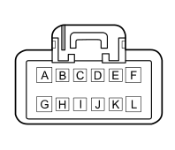

D4A FRONT/ENGINE COUPLING ( ENGINE )
- Path
- Electrical equipment > 3 CONNECTORS > D INTERMEDIATE COUPLINGS > D004 FRONT/ENGINE COUPLING > D4A FRONT/ENGINE COUPLING ( ENGINE )
- Kind
- connector pinout (pin -> wire colour -> other end)
- Applies to
- engines: 1.3 JTD 16V; all production periods
- Interactive page
- https://sloeber94.github.io/elrnDB-fDbl/en/#/223004466
Applies to: engines: 1.3 JTD 16V; all production periods

Wiring | Colour |
|---|---|
NERO (black) |
Pin | Cable | Destination | |||
|---|---|---|---|---|---|
Sec.. | Colour | Nodo | Connect. | Pin | |
A | 2,5 | V (green) | 30 | ||
B | 0,5 | GR (yellow with red stripe) | 1 | ||
C | 0,5 | CN (orange with black stripe) | 88 | ||
D | 0,5 | NS (black with pink stripe) | 58 | ||
E | 0,5 | SB (pink with white stripe) | 59 | ||
F | 0,75 | NZ (black with violet stripe) | 2 | ||
G | 0,5 | N (black) | 1 | ||
H | 0,5 | BV (white with green stripe) | 28 | ||
I | 0,5 | LB (blue with white stripe) | 27 | ||
J | 0,5 | BN (white with black stripe) | 25 | ||
L | 0,5 | HN (grey with black stripe) | 2 | ||